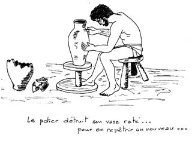

...
Ó»Ò«¯¿˙ÃȆ†† ...
˜ƒבּ«Ï¿˙ÃÈ
Ce principe,
fondamental pour Yehuda ha-Nasi et tous les Sages de la tradition rabbinique [cf.
Pirqé Avot, mishnah 1 ‡,
1 Corinthiens 153, etc.], me semble valable aussi pour ceux
qui veulent étudier l'hébreu biblique.
Avec ce principe, on peut parfaitement éviter
la momifiante fixité d'une fidélité littérale et
vivre un renouvellement permanent dans la compréhension du contenu
étudié et de ses significations. Comment ?
En adoptant l'attitude
de l'artisan potier :
¿ƒשׁ¿Á«˙
‰«ÎÃ¿ÏƒÈ ‡¬שׁ¯ ‰וּ‡ Ú…שׂ∆‰ בּ«Á…Ó∆¯ בּ¿È«„ ‰ÈÃוֹˆ≈֑¯
¿שׁ»·
«Èëڬשׂ≈‰וּ כּ¿ÏƒÈ ‡«Á≈¯
כּ«‡¬שׁ∆¯
È»שׁ«¯ בּ¿Ú≈È≈È ‰«ÈÃוֹˆ≈¯ Ï«Ú¬שׂוֹ˙”
†(Jérémie 184)
"Et
si le plat qu'il formait de l'argile était gâché dans ses
mains, alors le potier recommençait et formait un autre plat, comme il
est bon que fasse un potier."
[Traduction
de François BON et Léo LABERGE dans "La Bible, nouvelle
traduction" (Bayard, Paris, 2001), choisie, je l'avoue, parce qu'elle
"colle" mieux que d'autres au sens de mon propos.]
J'ai, pendant plusieurs dizaines
d'années, beaucoup reçu de divers enseignants, en direct ou
grâce à leurs écrits récents ou posthumes, et
souvent essayé de transmettre à d'autres le mieux possible.
C'est le but de ce
petit site-web : partager non seulement ce que j'ai reçu, mais aussi le
plaisir du potier qui met toute son inventivité et sa rigueur au service
d'une transmission la plus fidèle possible du trésor qu'il a lui-même
reçu.
Avec
toutes mes excuses pour les coquilles ou erreurs qui auraient pu
échapper à ma vigilance.
Francis Boulanger (fraboulanger@orange.fr)

Vous trouverez dans ce site :
|
Ø un
petit cours de grammaire intitulé : éléments de base pour une grammaire
de l'hébreu |
|
Ø Des
tableaux de conjugaison 1 : ∑ Généralités.
Les binyanîm ∑ Conjugaison
théorique et verbe "shalém" ∑ verbe
avec gutturale ∑ verbe
avec alef quiescent ∑ verbe
abev Nun ∑ verbe
avec Yod ou Waw ∑ verbe
géminé ∑ verbes
complexes ∑ verbes
hybrides (et défectifs) ∑
verbes
irréguliers ou "à problème" |
|
|
|
|
|
Ø un
"Répertoire Lexical" de tous les verbes
2 de l'hébreu biblique,
numérotés de 1 à 1407 [avec
1 supplément pour les 184 verbes en araméen] |
|
|
|
|
||
|
Ø un
mémoire sur le Waw conversif et la
syntaxe de l'hébreu biblique |
||
|
|
||
|
Ø et
quelques dossiers (en vrac) sur ... ∑
... des mots, ∑
...des racines, ∑
... ou des thèmes ...bibliques. |
|
Ø et
quelques autres dossiers de grammaire : ∑
l'article défini ∑
le nom avec suffixes personnels ∑
les pronoms personnels ∑
les pronoms hm et hml ∑
les ªte≤amîm et leur syntaxe |
1.
En particulier le
document 3.000 "Liste codée des tableaux de conjugaison"
pour s'y retrouver dans ces nombreuses grilles.
2.
Ou plus exactement
"les racines verbales" ; en effet, comme dans la plupart des
dictionnaires, ZaMaR (rmz), par exemple, a le
numéro 279, quel que soit le binyan (pa≤al,
nif≤al ou pi≤él) dans lequel il est
conjugué.